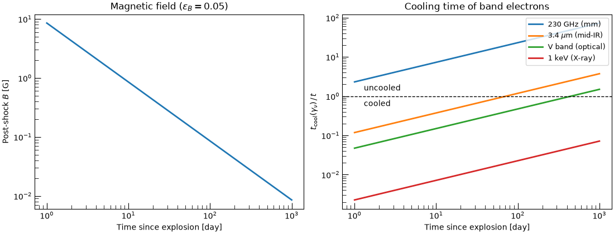
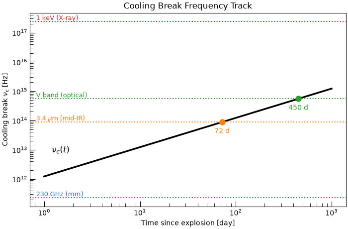

Note
Go to the end to download the full example code.
Is My Supernova Fast-Cooling? Tracking the Cooling Break#
Relativistic electrons behind a supernova shock radiate away their energy through synchrotron emission. Electrons above the cooling Lorentz factor \(\gamma_c\) lose most of their energy within the age of the source, and those below it do not. This sets the cooling break frequency \(\nu_c\) in the synchrotron spectrum. When a band lies above \(\nu_c\) the emission is cooled and its spectrum is steeper. Below \(\nu_c\) the emission is uncooled.
For a modeller the question is concrete. At what epoch does \(\nu_c\) sweep
through my observing band? This example answers it for a Type Ibc supernova
expanding into a Wolf-Rayet wind. It uses
SynchrotronRadiativeCoolingEngine
with the magnetic field \(B(t)\) from a self-consistent shock model.
The engine relies on three results (isotropic pitch angles, Thomson limit):
Note
SynchrotronRadiativeCoolingEngine
is imported from trilobite.radiation.synchrotron.cooling. The
trilobite.radiation.synchrotron namespace only exports the abstract
base class
SynchrotronCoolingEngine.
import matplotlib.pyplot as plt
import matplotlib.transforms as transforms
import numpy as np
from astropy import units as u
from trilobite.dynamics.shocks.chevalier import ChevalierSelfSimilarWindShockEngine
from trilobite.dynamics.shocks.core import StrongColdShockConditions
from trilobite.radiation.synchrotron.cooling import SynchrotronRadiativeCoolingEngine
from trilobite.utils.plot_utils import set_plot_style
set_plot_style()
The Shock and Its Magnetic Field#
The cooling engine is stateless: it needs only \(B\) and \(t\). We
get \(B(t)\) from a Chevalier self-similar shock in a steady
\(\rho \propto r^{-2}\) wind
(ChevalierSelfSimilarWindShockEngine).
The wind is Wolf-Rayet-like, with \(\dot M = 10^{-5}\,M_\odot\,{\rm yr^{-1}}\)
and \(v_w = 1000\,{\rm km\,s^{-1}}\). We assume a fixed fraction
\(\epsilon_B\) of the post-shock thermal energy density is in the magnetic
field, \(B = \sqrt{8\pi\,\epsilon_B\,e_2}\).
t = np.geomspace(1.0, 1.0e3, 200) * u.day
M_dot = 1.0e-5 * u.Msun / u.yr
v_wind = 1000.0 * u.km / u.s
epsilon_B = 0.05
shock = ChevalierSelfSimilarWindShockEngine().compute_shock_properties(
t, E_ej=1.0e51 * u.erg, M_ej=2.0 * u.Msun, n=10, M_dot=M_dot, v_wind=v_wind
)
rho_csm = M_dot / (4 * np.pi * shock.radius**2 * v_wind)
gamma_ad = 5.0 / 3.0
P_2 = StrongColdShockConditions.compute_post_shock_pressure(shock_velocity=shock.velocity, upstream_density=rho_csm)
e_2 = P_2 / (gamma_ad - 1.0) # post-shock thermal energy density
B = np.sqrt(8 * np.pi * epsilon_B * e_2.to_value(u.erg / u.cm**3)) * u.G
Cooling Lorentz Factor#
Every compute_* method of the engine accepts arrays, so
\(\gamma_c(t)\) and \(\nu_c(t)\) come from single calls with no loops.
Which Electrons Are Cooled?#
To test a particular band we need the Lorentz factor \(\gamma_\nu\) of the electrons radiating at that frequency. Since \(\nu_{\rm synch} \propto \gamma^2 B\), it follows from the engine’s own frequency relation. The ratio \(t_{\rm cool}(\gamma_\nu)/t\) is then the diagnostic: values below 1 mean the band is cooled.
bands = {
"230 GHz (mm)": 2.3e11 * u.Hz,
r"3.4 $\mu$m (mid-IR)": 8.8e13 * u.Hz,
"V band (optical)": 5.5e14 * u.Hz,
"1 keV (X-ray)": 2.4e17 * u.Hz,
}
nu_unit = engine.compute_characteristic_frequency(B=B, gamma=1.0) # nu_synch for gamma = 1
fig, (ax_B, ax_cool) = plt.subplots(1, 2, figsize=(11, 4.2), constrained_layout=True)
ax_B.loglog(t.to_value(u.day), B.to_value(u.G), lw=2)
ax_B.set(xlabel="Time since explosion [day]", ylabel="Post-shock $B$ [G]", title=r"Magnetic field ($\epsilon_B=0.05$)")
for (label, nu), color in zip(bands.items(), ["C0", "C1", "C2", "C3"]):
gamma_nu = np.sqrt((nu / nu_unit).decompose().value)
t_cool = engine.compute_cooling_time(B=B, gamma=gamma_nu)
ax_cool.loglog(t.to_value(u.day), (t_cool / t).decompose(), lw=2, color=color, label=label)
ax_cool.axhline(1.0, color="k", ls="--", lw=1)
ax_cool.text(1.3, 0.8, "cooled", va="top", fontsize=10)
ax_cool.text(1.3, 1.25, "uncooled", va="bottom", fontsize=10)
ax_cool.set(
xlabel="Time since explosion [day]",
ylabel=r"$t_{\rm cool}(\gamma_\nu)\,/\,t$",
title="Cooling time of band electrons",
)
ax_cool.legend(loc="upper right", fontsize=9)
plt.show()

As the shock decelerates the field drops and electrons cool more slowly. Every band therefore moves from cooled to uncooled at some epoch, with the lowest frequencies switching first.
The Cooling Break Track#
The same information is easier to read off as \(\nu_c(t)\) itself. We mark the epoch at which the track crosses each band, which is when that band’s spectrum changes from cooled to uncooled. Bands that the track never reaches in the plotted time range are never crossed.
fig, ax = plt.subplots(figsize=(7, 4.6), constrained_layout=True)
blended = transforms.blended_transform_factory(ax.transAxes, ax.transData) # x in axes units, y in data units
ax.loglog(t.to_value(u.day), nu_c.to_value(u.Hz), lw=2.5, color="k")
ax.text(1.2, 8e12, r"$\nu_c(t)$", fontsize=12)
for (label, nu), color in zip(bands.items(), ["C0", "C1", "C2", "C3"]):
ax.axhline(nu.value, color=color, ls=":", lw=1.5)
ax.text(0.02, nu.value, label, color=color, va="bottom", ha="left", fontsize=9, transform=blended)
# nu_c(t) is monotonic here, so we can interpolate in log space for the crossing epoch.
if nu_c.min() < nu < nu_c.max():
t_cross = 10 ** np.interp(np.log10(nu.value), np.log10(nu_c.to_value(u.Hz)), np.log10(t.to_value(u.day)))
ax.plot(t_cross, nu.value, "o", color=color, ms=8, zorder=5)
ax.annotate(
f"{t_cross:.0f} d",
(t_cross, nu.value),
xytext=(0, -16),
textcoords="offset points",
ha="center",
color=color,
)
ax.set(xlabel="Time since explosion [day]", ylabel=r"Cooling break $\nu_c$ [Hz]", title="Cooling Break Frequency Track")
plt.show()

Takeaways#
\(\nu_c \propto B^{-3} t^{-2}\) falls with age at fixed \(B\). In a decelerating blast wave \(B\) drops quickly enough that \(\nu_c\) instead rises with time, sweeping upward through the spectrum.
A band is cooled until \(\nu_c\) passes it. For this source the mm band is uncooled throughout, the mid-IR and optical bands switch over at tens to hundreds of days, and the X-ray band stays cooled.
The track is sensitive to \(\epsilon_B\), \(\dot M\) and \(v_w\), so a measured crossing epoch constrains the microphysics.
For the effect of inverse Compton losses, which lower \(\nu_c\) by \((1+Y)^{-2}\), see the companion example on synchrotron versus IC cooling.
Total running time of the script: (0 minutes 0.862 seconds)